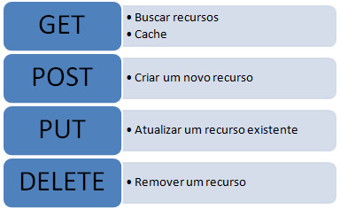
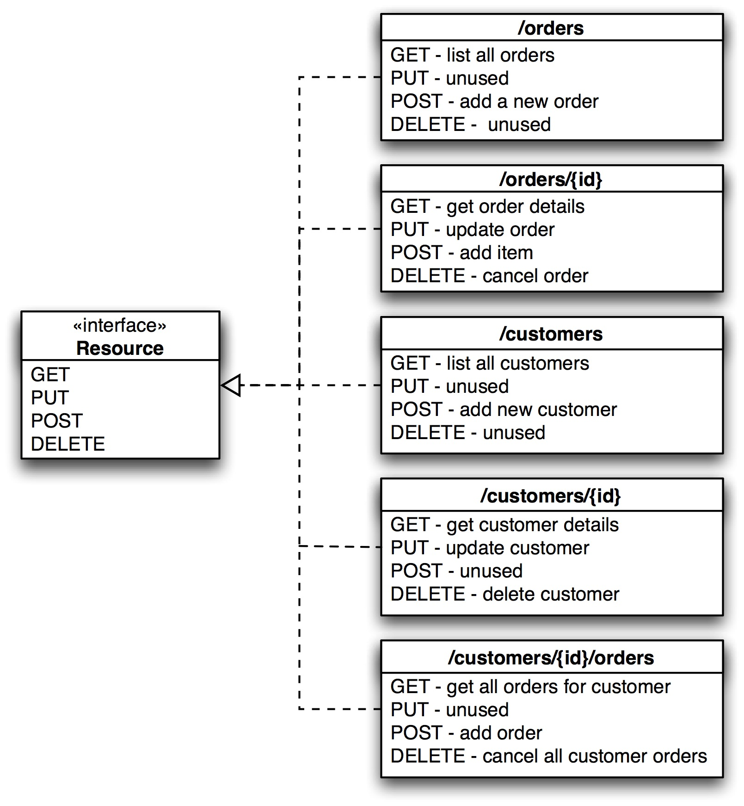

Disciplinas
FUNDAMENTOS DE WEB-T01-2024-2. Concluído
Materiais
Vídeo 2 - Desenvolvimento Web - Aplicações Web RESTFul sendProf° ministrante: Júlio Cezar Estrela. (UNIVESP)
Conteúdo
Estrutura de Aplicações Web
Roteiro:- Retrospectiva
- Introdução ao REST
- REST x RESTFUL
- Restrições da API RESTFUL
- Interface Uniforme
Retrospectiva.
O HTTP que utilizamos atualmente foi inicialmente concebido para apenas fazer ligações entre páginas Web, ou seja, só transportava HTML
Hoje os recursos disponíveis podem ser de qualquer tipo de mídia
O transporte de recursos (dados) exceto páginas HTML era feito no início com RPC (Remote Procedure Call)
- As RPCs permitiam requisitar serviços de outras máquinas para conseguirmos recursos via rede, sem saber dos detalhes de implementação
Em 1998, Dave Winer juntou a disponibilidade dos serviços disponíveis anteriormente com a Web e cunhou o termo Web Services que inicialmente era baseado em XML-RPC
Por isso a importância do RPC no contexto
O XML-RPC foi criado para ser usado em cima do HTTP como protocolo de transporte dos dados
Depois foi rebatizado como SOAP, que de fato se tornou o padrão de transporte de mensagens XML entre aplicações distribuídas
Embora o SOAP seja um protocolo poderoso em termos de exposição de dados, ele é complexo
Para simplificar as coisas, foram idealizadas Web APIs, e uma delas foi a REST.
Introdução ao REST.
O REST é uma forma alternativa de se desenvolver Web Services
Foi proposto por Roy Fielding (2000), em sua tese de doutorado.
- Razão pela qual não há tantas especificações e padrões. Em resumo é simples!!!
A vantagem do REST é que ele foi amadurecendo de forma gradativa se comparado ao SOAP
REST é muito aderente às necessidades do mercado de desenvolvimento de aplicações Web atuais
REST x RESTFUL.
REST
- É uma abstração da arquitetura da WWW
- É um estilo arquitetural que tem um conjunto de restrições aplicados a componentes da aplicação
- Ele ignora detalhes de implementação de componente e sintaxe do protocolo
- Foca nos papéis dos componentes
RESTRIÇÃO DA API RESTFUL.
Critérios para API Restful
- Interface uniforme
- Sem estado
- Cacheável
- Cliente-Servidor
- Baseado em camadas
INTERFACE UNIFORME.
Das restrições destacadas a que menos é atendida éa interface uniforme
Para alcançar a interface uniforme é preciso atingir 4 critérios
- Base em recursos
- Se comparado ao RPC REST lidar com recursos ao invés de métodos.
- Exemplo: as chamadas posts/criar-dados?=valor=Teste e /posts são diferentes
- Manipular recursos por meio de representações
- Cliente lida com os recursos por meio de uma representação (JSON, XML, etc.), que contenha informação suficiente para manipular este no servidor
- Mensagens autodescritivas
- Também inclui informações para que o cliente saiba como utilizá-las. Usando HTTP, por exemplo, é necessário uma propriedade Content-Type incluída no cabeçalho para descrever que tipo de representação é utilizada.
- Hipermídia como motor do estado da aplicação (HATEOS)
- Tem como objetivo ajudar os clientes a consumirem o serviço sem a necessidade de conhecimento prévio profundo da API.
Exemplo de API que obedece a restrição HATEOAS
{
"cursos": [
{
"id": 1,
"nome": "C++",
"aulas": "api.treinamento.univesp.br/cursos/1/aulas"
},
{
"id":2,
"nome": "Ruby",
"aulas": "api.treinamento.univesp.com.br/cursos/2/aulas"
},
{
"id": 3,
"nome": "Java",
"aulas": "apitreinamento.univesp.com.br/cursos/3/aulas"
}
]
}
HATEOAS (RFC 5988)
- Tem como objetivo ajudar os clientes a consumirem o serviço sem a necessidade de conhecimento prévio profundo da API.
É importante frisar que uma API deve ser um livro aberto e que você não precise de acesso à documentação para saber como fazer um GET ou POST em um recurso
- Tudo precisa ser simples e tudo ser descoberto por meio da API
- Se você não consegue fazer isso, sua API não é RESTFul
O REST fornece uma interface uniforme com os métodos GET, POST, PUT e DELETE
https://javabahia.github.io/img/posts/2020-08-07-integracao-de-sistemas-com-web-service-rest-ou-soap/metodos_basicos_rest.jpeg
Interface uniform:
https://i.sstatic.net/9vcYP.jpg
Referências:
- 1.Desenvolvimento de Software II: Introdução ao Desenvolvimento Web com HTML, CSS, JavaScript e PHP
- 2.https://www.treinaweb.com.br/blog/o-que-e-hateoas
- 3.https://en.wikipedia.org/wiki/HATEOAS
- 4.https://javabahia.github.io/integracao-de-sistemas-com-web-service-rest-ou-so ap/#4-rest
- 5.http://www.revistaintellectus.com.br/artigos/6.71.pdf
- 6.http://www.linhadecodigo.com.br/artigo/2059/web-services-rest.aspx
- 7.https://www.infoq.com/br/articles/rest-introduction/
- 8.https://pt.wikipedia.org/wiki/Dave_Winer